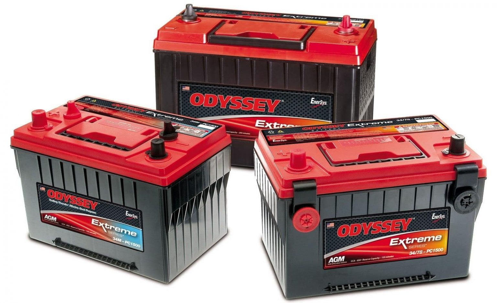

نکاتی در رابطه با باطری خودرو
باتری اوربیتال وان سیلور پلاس چیست؟
باطری خودرو یکی از قطعات بسیار مهم و حیاتی خودرو میباشد که بدون وجود آن بسیاری از آپشن های موجود در ماشین غیر قابلاستفاده میشوند. ما در این مطلب قصد داریم برای شما بیشتر در رابطه با باطری خودرو صحبت کنیم و به شما بگوییم که به طور کلی این بخش از ماشین چه ویژگی هایی دارا میباشد و شما چند وقت یکبار باید به تعویض باتری بپردازید. اگر شما نیز کنجکاو باشید هستید تا بیشتر در رابطه با این موضوع اطلاعات کسب کنید و میخواهید که بیشتر در این رابطه بدانید، به شما پیشنهاد میکنیم که ما را تا انتهای این مطلب همراهی کنید. یکی از ویژگی های مهم باطری خودرو قابلیت شارژ شدن آن ها میباشد. هنگامیکه خودرو در حال حرکت میباشد، با استفاده از دینام انرژی مکانیکی خودرو به انرژی برق تبدیل میشود و این انرژی برق یا در شرایط گوناگون مانند روشن بودن چراغ ها استفاده میشود، و یا در صورت اضافه آمدن در باتری خودرو ذخیره میشود. انرژی ذخیرهشده در باتری خودرو در موارد گوناگون دیگری مانند استارت خودرو، استفاده از ضبط و چراغ ها و یا بخاری و کولر خودرو هنگامی که ماشین خاموش است مورد استفاده قرار میگیرد و در این زمینه ها کمککننده میباشد. به هر حال اگر شما نیز کنجکاو هستید تا بیشتر در رابطه با این قسمت از خودرو اطلاعات کسب کنید به شما پیشنهاد میکنیم که ما را تا انتهای این مطلب همراهی کنید.
چه زمانی متوجه شویم که هنگام تعویض باتری خودرو شده؟
توجه کنید که باطری خودرو عمر مشخص و واضحی دارند و بعد از گذشت چند سال شما باید آنها را تعویض کنید و از انواع جدید آن ها برای بهتر شدن شرایط خودروی خودتان استفاده کنید. توجه نمایید که علائم و نشانه هایی وجود دارند که شما میتوانید با دقت به این علائم و نشانه ها متوجه شوید که آیا زمان تعویض باتری خودروی شما فرا رسیده است یا خیر. یکی از نشانه های اصلی تمام شدن عمر باطری خودرو شما این است که هنگام استارت زدن ماشین شما روشن نشود. به طور کلی هر گونه مشکل در استارت که با روش های تعمیری دیگر حل نشود، در نهایت میتواند به باتری خودرو مربوط باشد. پس هنگامی که باتری خودروی شما عمر مفیدش را از دست داشته داده باشد شما با مشکل استارت روبرو خواهید شد و ماشین شما روشن نخواهد شد و مجبور هستید که از روش های دیگری مانند هل دادن و یا باتری به باتری کردن ماشین خودتان را روشن کنید. علاوه بر این کار نکردن لوازم برقی خودرو نیز میتواند نشانه دیگری از تمام شدن عمر باتری باشند. هنگامی که ضبط شما نخواند، چراغ های شما به درستی کار نکنند، و شیشه های شما به راحتی بالا و پایین نشوند میتوانید متوجه شوید که عمر باتری ماشین شما به پایان رسیده و شما باید از یک باتری جدید برای بهتر شدن شرایط خودروی خودتان استفاده کنید. توجه به این نکات کوچک میتواند به شما کمک کند تا به راحتی و بدون و بدون هیچ گونه مشکلی متوجه شوید که زمان تعویض باتری شما فرا رسیده یا خیر.
بررسی انواع مختلف باتری خودرو
توجه نمایید که باطری خودرو نیز درست مانند هر محصول دیگری در انواع مختلف و متفاوتی تهیه میشود که هر کدام از این باتری ها ویژگی های منحصر به فرد خودشان را دارند و در زمینه های گوناگون میتواند مورد استفاده قرار بگیرد. ما در ادامه قصد داریم که دو مورد از موارد معروف باطری خودرو را برای شما نام ببریم و به شما بگوییم که انواع معروف و پر طرفدار این باتری ها کدام ها میباشند تا شما بتوانید با اطلاعات کسب کردن در این رابطه یک باتری مناسب را برای خودتان خریداری کنید.
باتری های سیلد و یا به عبارت دیگر باطری های اتمی
نوع اول باطری خودرو با نام باتری های سیل و یا اتمی شناخته میشود. توجه نمایید که این نوع باتری ها حساسیت کمتری نسبت به باتری های دیگر دارند و نیاز به مراقبت آن چنانی ندارند. همچنین این گونه باتری ها در حالت شارژ بیش از حد نیز مقاومتر. هستند یعنی هنگامی که شما در حال استفاده از ماشین هستید اما از باتری خودرو استفادهای نمیکنید مشکل خاصی برای باتری شما به وجود نمیآید اما ممکن است باتری های دیگر با شارژ بیش از حد خراب شوند. این گونه باتری ها عمر بیشتری دارند و شما میتوانید برای سال های بیشتری از آن ها استفاده کنید.باتری های اتمی باتریها به صورت جامد و خشک فعالیت میکنند.
باتری های غیرسیلد و یا به عبارت دیگر باتری های اسیدی
نوع دیگر باتری خود را با نام باتری اسیدی و یا باطری سیلد شناخته میشود که این باتری ها به نسبت باتری های اتمی و حساستر هستند و شما باید بیشتر از آن ها مراقبت کنید. توجه نمایید اگر در منطقهای زندگی میکنید که آب و هوای کلی آن منطقه گرم میباشد؛ استفاده از این نوع باتری ها برای شما مناسبتر میباشد زیرا شما میتوانید در صورت گرم شدن بیش از حد هوا به آن ها آب اضافه کنید و ظرفیت باتری و توان آن را بالاتر ببرید. توجه نمایید که این نوع باتری ها معمولاً قدیمیتر از باطری های اتمی میباشند و شما برای خرید آن ها نیاز دارد که هزینه های کمتری را بپردازید. پس اگر به دنبال خرید یک باتری مناسب با قیمت پایین هستید؛ استفاده از این نوع باتری ها میتواند نیاز شما را برطرف کنند و به شما کمک کننده باشد.
جمع بندی
ما در این مطلب سعی کردیم برای شما در رابطه با باطری خودرو صحبت کنیم و به شما بگوییم که انواع باتری ها کدام ها میباشند و شما چه زمانی متوجه خرابی باتری میشوید. توجه نمایید که باتری خودرو را از اهمیت ویژهای برخوردار است و سالم بودن آن تاثیر بسیار زیادی در نحوه کارکرد خودرو دارد. پس اگر کارکرد مناسب و با کیفیت خودرو برای شما مهم است شما حتما باید به استفاده بهینه از باتری و همچنین تعویض به موقع آن دقت و توجه داشته باشید. توجه نمایید که نحوه استفاده شما از باتری تاثیر بسیار زیادی در عمر و کارایی باتری دارا میباشد و شما اگر به شرایط کلی و عمومی باتری دقت داشته باشید و به صورت دورهای شرایط آن را مورد بررسی قرار دهید، میتوانید مطمئن باشید که عمر باتری خودتان را تا حد بسیار زیادی بالا ببرید.